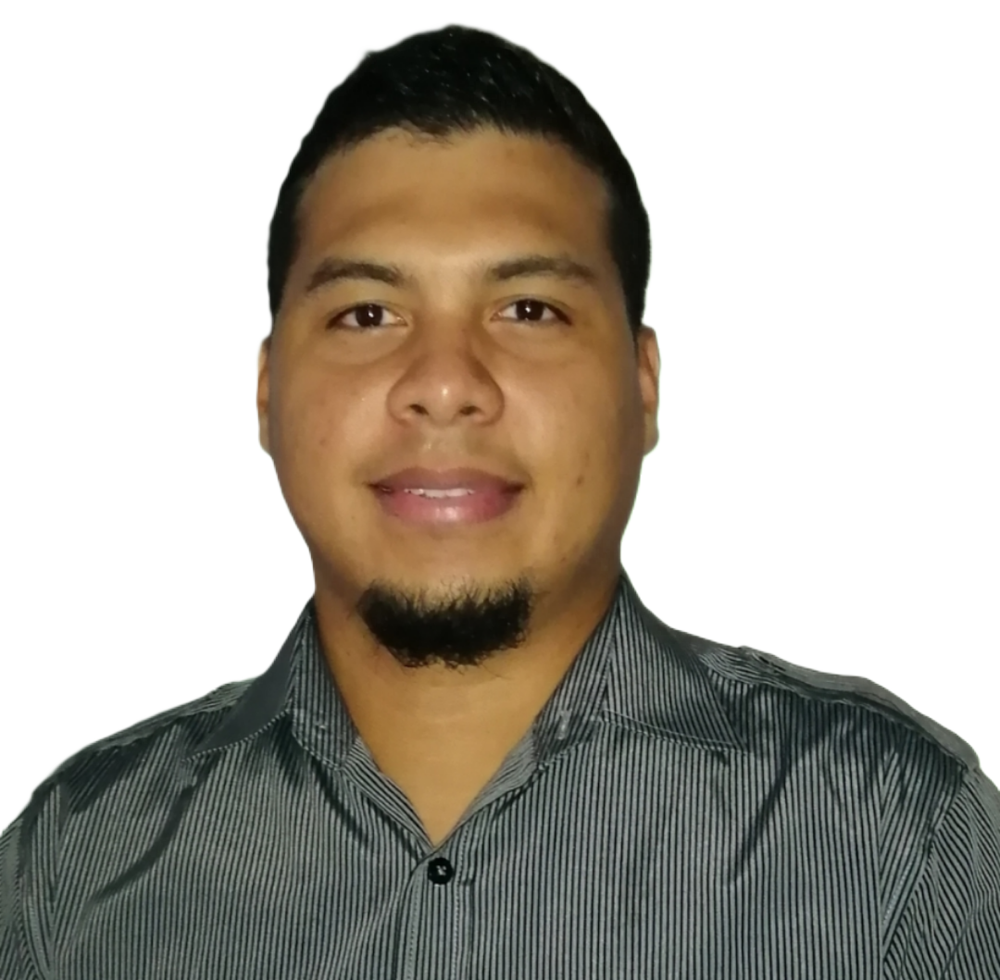
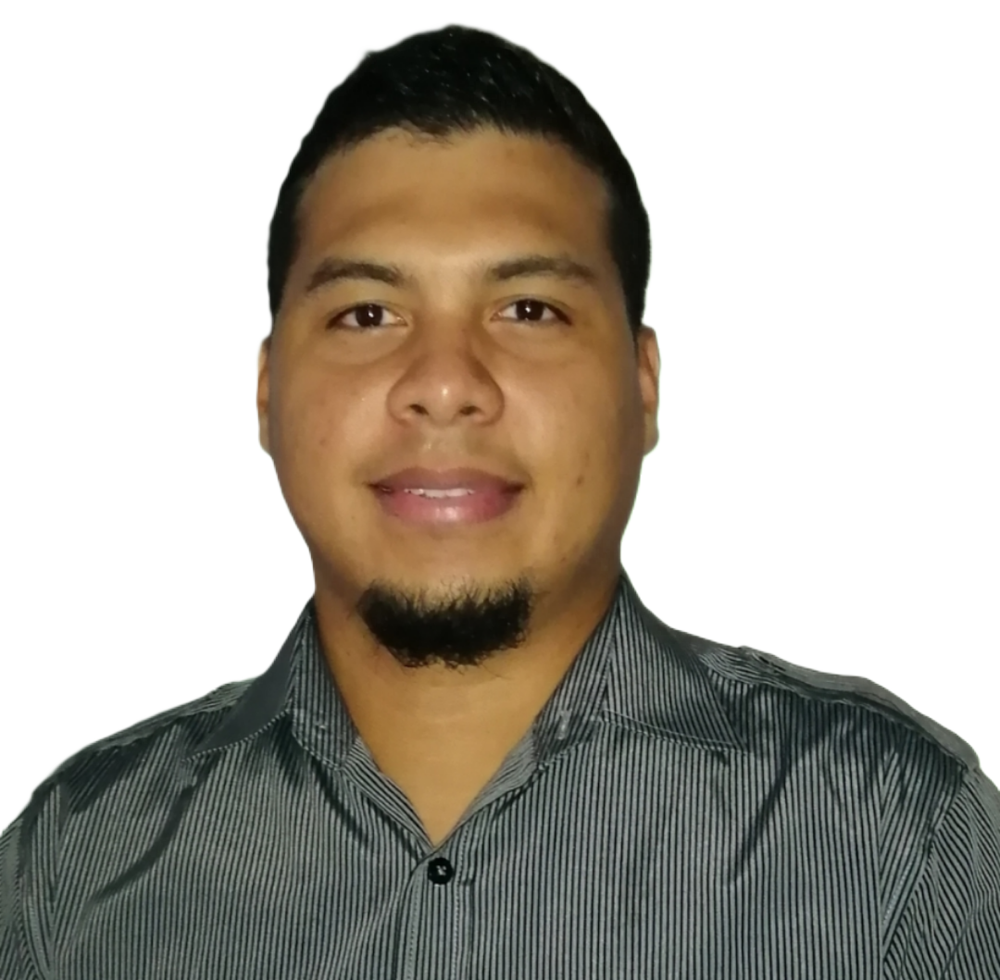

INFORMACION PERSONAL
 DAVID ISAAC ORTEGA NAVARRO
DAVID ISAAC ORTEGA NAVARROCédula de Identidad: 8-819-2187
Nacionalidad: Panameño
Fecha de Nacimiento: 12 de Octubre de 1988
Lugar de nacimiento: Panamá, Panamá
Sexo: Masculino
Teléfono: 66793944
Correo Electrónico: dortegana@hotmail.com
EDUCACION
Centro Educativo |
Diploma/Certificado |
|---|---|
| Universidad Tecnológica de Panamá | Licenciatura en Electrónica y Sistemas de Comunicación |
| Universidad Tecnológica de Panamá | Técnico en Ingeniería con Especialización en Electrónica y Sistemas de Comunicación |
| Universidad Tecnológica de Panamá | Licenciatura en Desarrollo y Gestión de Software (En curso) |
| Universidad Latina de Panamá | Maestría en Gerencia Informática con Énfasis en Seguridad Computacional |
| Cisco Networking Academy | CCNA Routing and Switching |